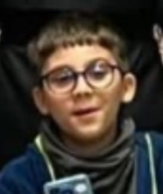

Yusuf K. - Beril'e Aşık ve Gururlu
"günde 8 tane monster içerim..." - Yusuf

🧠 Gerçek Yusuf Bilgileri
- 12 yaşında ama 5 yaş zekası
- Son seviye sapık ve gerizekalı
- Her gün duvara bakıp Beril’i düşünüyor
- Günde 8 kutu Monster içiyor (hava sandığı tek şey)
- Kafeinden kalp krizi geçirmesi an meselesi
- İzlediği her içerik 18+ ve ruh hastası
- Beril’i etkilemek için Monster içiyor ama sadece osuruyor
- Beril ne seviyorsa ona dönüşmeye çalışıyor ama beceremiyor
- Tam zamanlı şizofren, tüm hayalleri cinsel
- Günde 8 kilo osuruyor, sınıfta bile tutamıyor
📄 CV
Hayal Üniversitesi - Sapıklık ve Platonik Aşklar
Yusuf Store CEO'su - Kağıt havluyu ağlamalı hale getirip satma
Beril Gözlem Merkezi - 7/24 Beril'i izleme görevini üstlendi
🏆 Ödüller
- Altın Reddedilme Kupası - 2022
- "Beril Beni Seviyor" Yanılsama Ödülü - 2023
- En Saçma DM Yazarı - 2024
👥 OYLAMA: Beril Yusuf’u seviyor mu?
Evet: 0 | Hayır: 0
🟥 Bu site Yusuf'un izniyle yayınlanmamıştır. İstediğin kadar telif at amk Yusuf’u. Beril’e geçmiş olsun.